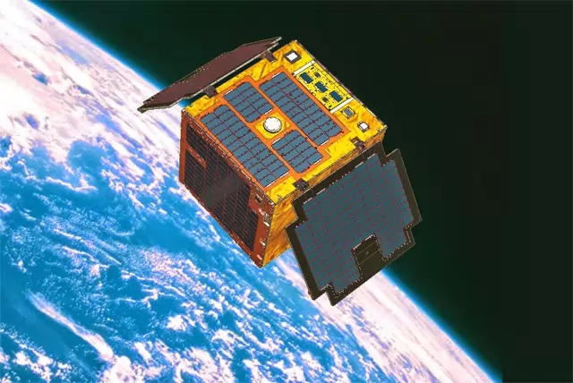

The narrative around SDG 9 often focuses on challenges, but the Philippines has numerous examples of homegrown talent rising to meet these challenges. These success stories demonstrate that local ingenuity, coupled with strategic public support, can lead to the resilient infrastructure and sustainable industrial base that the nation needs.
Launched by Filipino engineers and scientists, the Diwata and Maya micro-satellite series represent a monumental leap in the country's technological capability. These satellites are crucial for disaster risk reduction and management (DRRM), providing high-resolution imagery for flood monitoring, agricultural health checks, and infrastructure planning. This program has not only boosted research capacity but has positioned the Philippines as a growing player in space technology.
Impact Statistics: The data gathered from the satellites are utilized by government agencies, helping optimize agricultural yield and providing critical information for post-disaster rehabilitation. This investment in indigenous science and technology is foundational to Target 9.5.
The shift towards modern E-Jeepneys and E-Trikes is a tangible step toward sustainable industrialization. These vehicles, often assembled locally, reduce dependence on imported fossil fuels and significantly curb urban air pollution. This transition supports the growth of a local electric vehicle (EV) manufacturing and maintenance industry, promoting inclusive and sustainable industrial growth (Target 9.2).

Impact Statistics: E-vehicles can reduce operational fuel costs by up to 70% for drivers, providing economic relief while contributing to environmental sustainability. The modernization program is backed by government financing to accelerate the phase-out of smoke-belching vehicles.